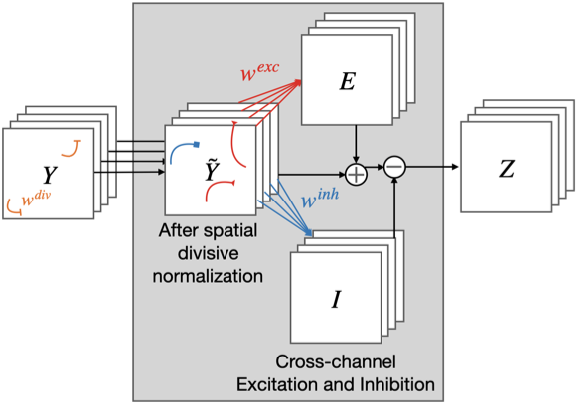

I am a 4th-year undergrad student in the Department of Cognitive Science at
University of California - San Diego advised by Prof. Virginia de Sa.
My current research mainly focuses on the development of bio-inspired neural architectures applied to computer vision problems.
Recent News
- Winter 2022 - Paper accepted at VSS 2022.
- Winter 2022 - Joining as a Student Researcher at Intel Corporation, San Diego, USA.
- Fall 2021 - Paper accepted at SVRHM 2021 Workshop @ NeurIPS.
- Spring 2021 - Invited as a guest speaker to Barts and The London School of Medicine and Dentistry to talk about medical artificial intelligence.
- Winter 2021 - Joined the de Sa Lab as a Research Assistant working with Virginia de Sa and Vijay Veerabadran
- Summer 2020 - Joined to be an Undergraduate Researcher - Machine Learning at IBM in collaboration with UC San Diego.
- Summer 2019 - Accepted as a Research Intern at Star Capital working with Dr. Fei Tony Liu
- Fall 2018 - Started my B.S in Cognitive Science: Machine Learning and Neural Computation at UC San Diego, CA
|
Research

Bio-inspired learnable divisive normalization for ANNs
Vijay Veerabadran, Ritik Raina, Virginia R. de Sa
SVRHM 2021 Workshop @ NeurIPS
[PDF]
[Bibtex]
@inproceedings{
veerabadran2021bioinspired,
title={Bio-inspired learnable divisive normalization for {ANN}s},
author={Vijay Veerabadran and Ritik Raina and Virginia R. de Sa},
booktitle={SVRHM 2021 Workshop @ NeurIPS },
year={2021},
url={https://openreview.net/forum?id=-ZOjASLOsrV}
}
Work Experience
Star Capital, Jakarta, Indonesia
Jul 2019 - Sept 2019. Mentor: Tony Liu